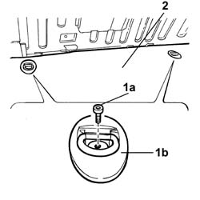
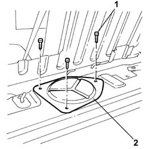
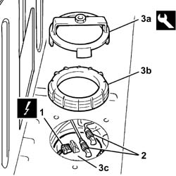

1040A70 SUBMERGED PUMP ASSEMBLY complete with level gauge - R.R.
- Path
- Procedures > 10 ENGINE > 1040 FUEL TANK AND PIPES > 1040A FUEL TANK AND COMPONENTS > 1040A70 SUBMERGED PUMP ASSEMBLY complete with level gauge - R.R.
- Kind
- repair procedure (removal / refitting; the operation number is the code)
- Applies to
- engines: 2.4 JTD 10V; all production periods
- Interactive page
- https://sloeber94.github.io/elrnDB-lThss/en/#/75838
Applies to: all engines; all production periods
 Removing
Removing
 Refitting
Refitting- Open the boot and disconnect
1. Undo the fixing bolts (1a) and remove the two belt holder hooks (1b).
2. Fold over the rear part of the spare wheel housing floor covering to gain access to the fuel pump cover.

Applies to: all engines; all production periods
1. Undo the fixing bolts.
2. Remove the protective cover for the submerged fuel pump.

Applies to: all engines; all production periods
1. Disconnect the electrical connection for the submerged fuel pump.
2. Disconnect the fuel supply and return pipes from the rapid connectors.
3. Undo the ring nut (3b), using the tool (3a), then remove the fuel pump (3c), complete with level gauge.
 | Description | Code | Function |
|---|---|---|---|
3a | Spanner | 1.870.736.000 | Tool for removing fuel pump retaining ring nut |

Applies to: all engines; all production periods
Refitting
Removing- Position the fuel pump in its housing in the tank.
- Fit the ring nut and tighten it torque using the tool.
| Description | Code | Function |
|---|---|---|---|
. | Spanner | 1.870.736.000 | Tool for removing fuel pump retaining ring nut |
- Connect the fuel supply and return pipe rapid connectors.
- Connect the electrical connection for the fuel pump and level gauge.
- Tighten the bolts fixing the fuel pump protective cover.
- Reposition the floor covering.
- Fit the belt holder hooks tightening the fixing bolts.
- Connect the negative battery terminal and close the boot.